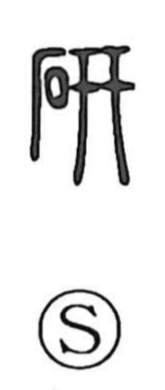

研

Uncategorized
Kun: togu, migaku | On: ken
to polish ・ to sharpen ・ to refine ・ research
Explanation
研 is a phono-semantic character. The stone element conveys grinding and working stone, while the phonetic element written as 开—also seen in characters like 妍 and 訝 and originally the graph for 笄, a slender hairpin like a chopstick used to smooth hair—supplies the sound and suggests something finely polished, often in ivory or silver. Because hard stones are used to polish such objects, 研 came to mean polishing and sharpening, and by extension precise finishing and mastery. In earlier usage, 研 was also written where the later character 硯 (the inkstone for preparing ink) is now used.